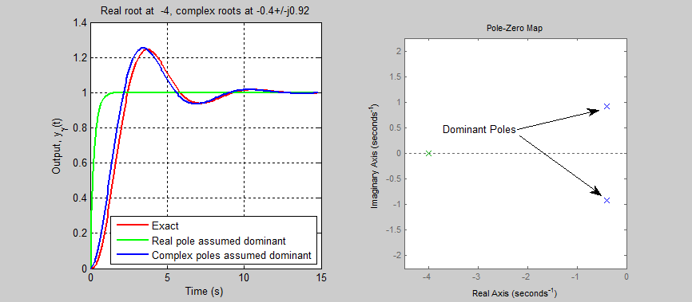

⏱️ Time-Domain Analysis
Time-domain analysis involves evaluating how control systems respond to standard inputs like step, ramp, and impulse over time. This helps assess performance aspects such as speed, accuracy, and damping.
🔍 Key Time-Domain Specifications
- Rise Time (Tr): Time taken for the response to rise from 10% to 90% of its final value.
- Peak Time (Tp): Time taken to reach the first peak of the overshoot.
- Maximum Overshoot (Mp): Amount the response exceeds the final value, expressed as a percentage.
- Settling Time (Ts): Time taken for the response to remain within a certain percentage (commonly 2% or 5%) of the final value.
- Steady-State Error (ess): The final difference between the desired and actual output.

Figure: Time-domain characteristics of a second-order system.
📈 Typical Test Inputs
- Unit Step:
u(t) → sudden change, used for transient analysis.
- Impulse:
δ(t) → spike at t=0, used for system characterization.
- Ramp:
t·u(t) → linearly increasing input.
🔁 First-Order System Response
Transfer function: G(s) = 1 / (τs + 1)
Step response: y(t) = 1 - e-t/τ
📊 Second-Order System Response
Transfer function: G(s) = ωn2 / (s2 + 2ζωns + ωn2)
- Underdamped: oscillatory response
- Critically damped: fastest non-oscillatory response
- Overdamped: slower non-oscillatory response
🌀 Animation: Damping Comparison
This animation shows underdamped step response. Try comparing with overdamped and critically damped systems using simulation.
🧪 Quiz Yourself
Q1: What defines settling time?
Answer: The time it takes for the system output to remain within a set range (e.g., ±2%) of the final value.
Q2: How does overshoot relate to damping?
Answer: Higher damping results in less overshoot; zero overshoot in overdamped systems.
Q3: What input is used to analyze transient response?
Answer: Unit step input.